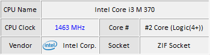

Understanding the Main Window
Your control center for CPU temperature monitoring
The main window of HeatMon is your control center. It is designed to provide a clear and quick overview of your CPU's thermal status. The dashboard is divided into several main sections:
HeatMon Main Window Interface
First Section
- Display Temperature Graph >> : displays advanced data visualization features (graphs) that plot the temperature of each core over time.
- Heat/Cooling : Percentage indicators (red) for heat and cooling (blue), which represent the ratio of cooling system usage to heat usage.
Second Section
- CPU Name : Information about the CPU name used.
- CPU Clock : Real-time CPU clock speed (MHz)
- Core # : Identifying the number of CPU cores
- Vendor : Names of CPU manufacturers such as (Intel/AMD).
- Socket : The type of socket used by the CPU.
Third Section
- CPU Core # : The number of CPU cores that can read the temperature sensor.
- Current : The current temperature value for each core.
- Min : Minimum temperature (safe value).
- Max : Maximum temperature (safe value).
- Indicator : Up-and-down indicator with progress bar (more user-friendly).
Fourth Section
- Help ? : Displaying HeatMon information and this help page.
- Display System Info : Display basic system information (BIOS, motherboard, and OS).